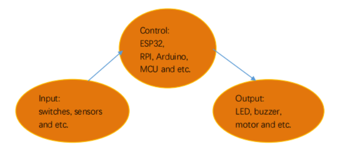
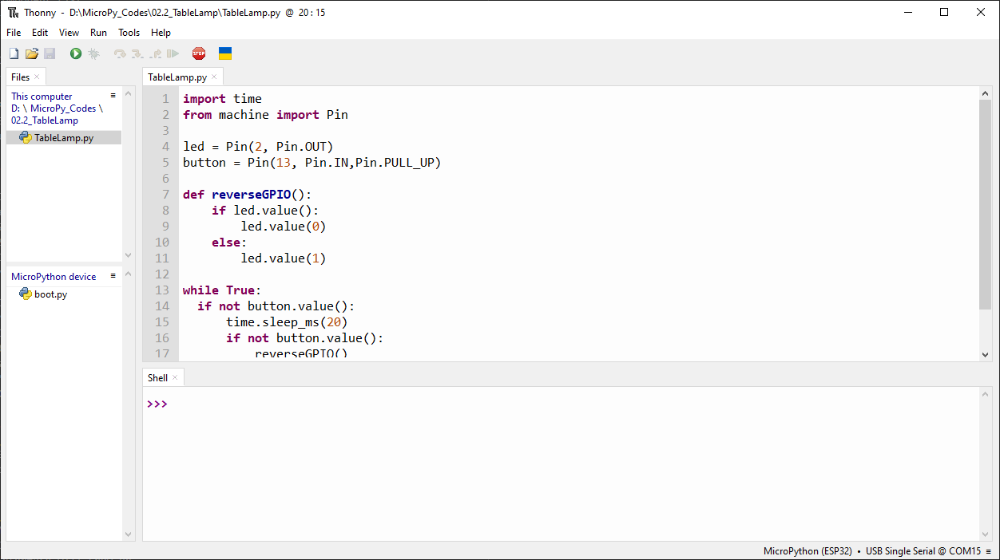
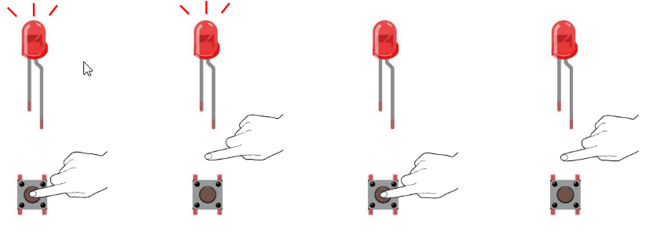
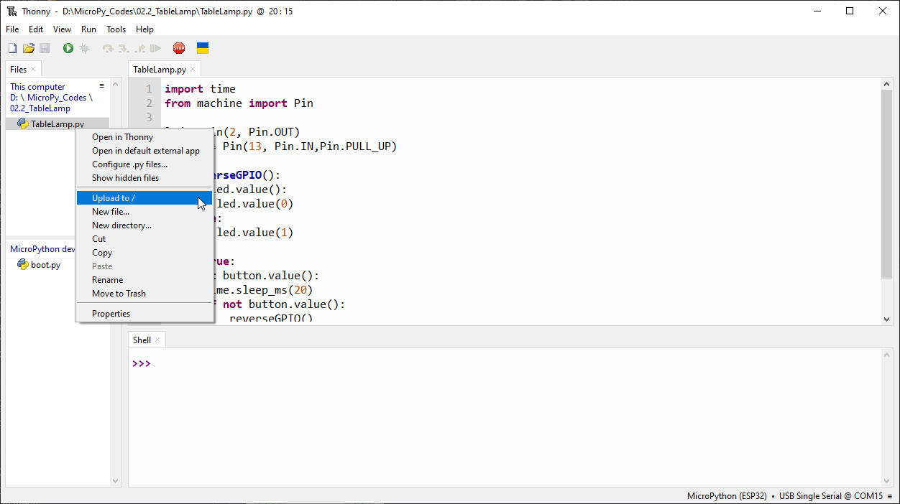
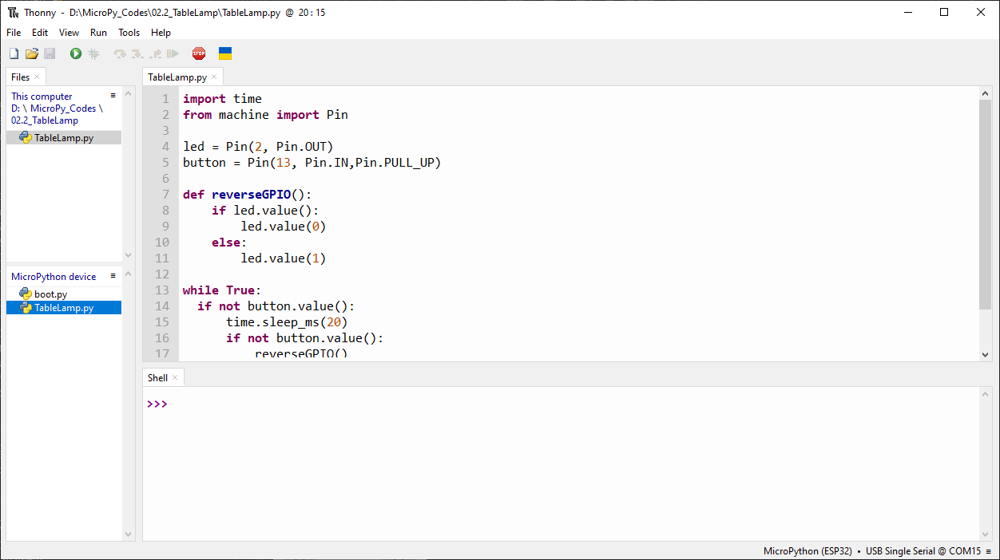

Chapter 2 Button & LED
Usually, there are three essential parts in a complete automatic control device: INPUT, OUTPUT, and CONTROL. In last section, the LED module was the output part and ESP32-S3 was the control part. In practical applications, we not only make LEDs flash, but also make a device sense the surrounding environment, receive instructions and then take the appropriate action such as LEDs light up, make a buzzer turn ON and so on.
Next, we will build a simple control system to control a LED through a push butt on switch.
Project 2.2 MINI table lamp
We will also use a push button switch, LED and ESP32-S3 to make a MINI table lamp but this will function differently: Press the button, the LED will turn ON, and pressing the button again, the LED turns OFF. The ON switch action is no longer momentary (like a door bell) but remains ON without needing to continually press on the Button Switch. First, let us learn something about the push button switch.
Debounce for Push Button
The moment when a push button switch is pressed, it will not change from one state to another state immediately. Due to tiny mechanical vibrations, there will be a short period of continuous buffeting before it completely reaches another state too fast for humans to detect but not for computer microcontrollers. The same is true when the push button switch is released. This unwanted phenomenon is known as “bounce”.

Therefore, if we can directly detect the state of the push button switch, there are multiple pressing and releasing actions in one pressing cycle. This buffeting will mislead the high-speed operation of the microcontroller to cause many false decisions. Therefore, we need to eliminate the impact of buffeting. Our solution: to judge the state of the button multiple times. Only when the button state is stable (consistent) over a period of time, can it indicate that the button is actually in the ON state (being pressed). This project needs the same components and circuits as we used in the previous section.
Code
02.2_Tablelamp Move the program folder “Super_Starter_Kit_for_ESP32_S3/Python/Python_C odes” to disk(D) in advance with the path of “D:/Micropython_Codes”. Open “Thonn y”，click “This computer” >> “D:” >> “Micropython_Codes” >> “02.2_TableLamp”and dou ble click “TableLamp.py”.
Click “Run current script” shown in the box of the above illustration, press the push button switch, LED turns ON; press it again, LED turns OFF.
Upload code to ESP32S3 As shown in the following illustration, right-click file 02.2_TableLamp and select “Upload to /” to upload code to ESP32S3.
Upload boot.py in the same way.
Press ESP32S3’s reset key, and then push the button switch, LED turns ON; Push the button again, LED turns OFF.
The following is the program code:
import time
from machine import Pin
led = Pin(2, Pin.OUT)
button = Pin(13, Pin.IN,Pin.PULL_UP)
def reverseGPIO():
if led.value():
led.value(0)
else:
led.value(1)
while True:
if not button.value():
time.sleep_ms(20)
if not button.value():
reverseGPIO()
while not button.value():
time.sleep_ms(20)